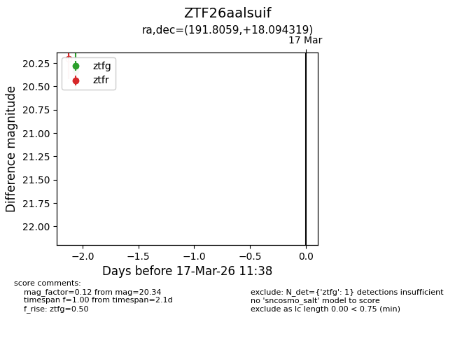
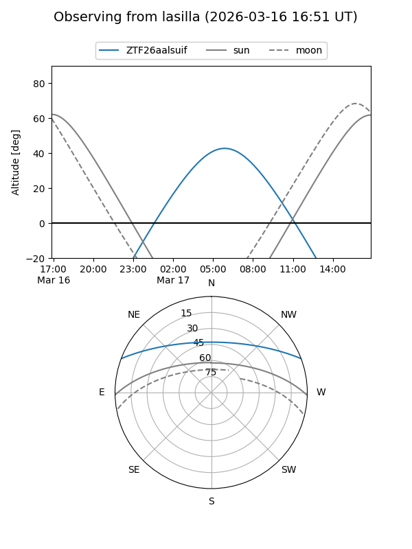
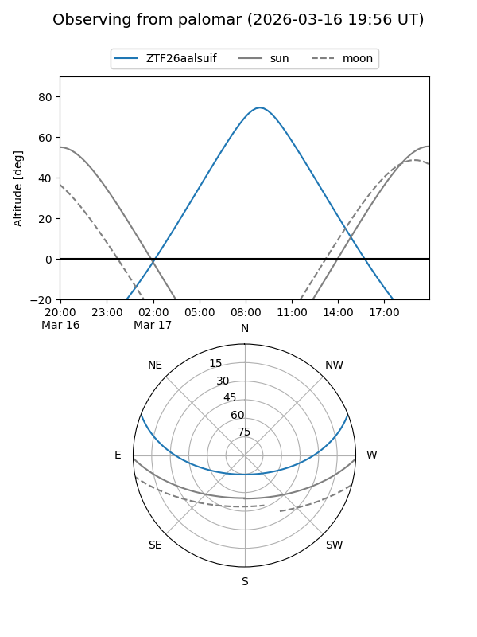

ZTF26aalsuif
Target ZTF26aalsuif at 2026-03-17 11:40
Aliases and brokers:
FINK: link
Lasair: link
ALeRCE: link
alt names
ZTF26aalsuif (ztf,fink_ztf)
Coordinates:
equatorial (ra, dec) = 191.8059,+18.09432
equatorial (HMS+DMS) = 12:47:13.42,+18:05:39.55
galactic (l, b) = (296.5777,+80.91403)
Flags:
Photometry:
last ztfg=20.34
1 ztfg detections
Lightcurve

Visibility


Additional plots